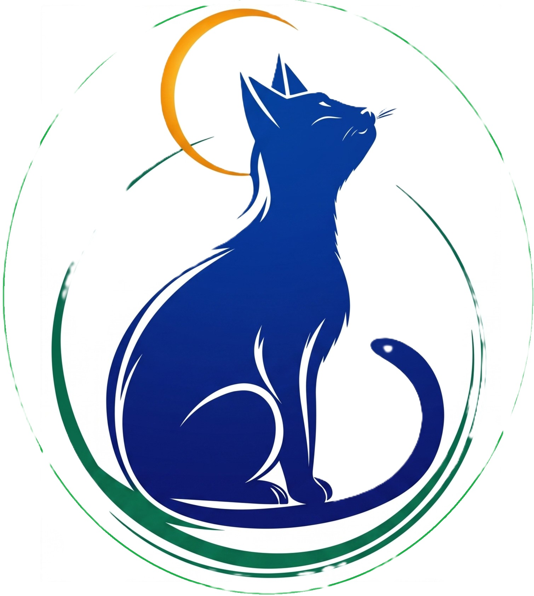
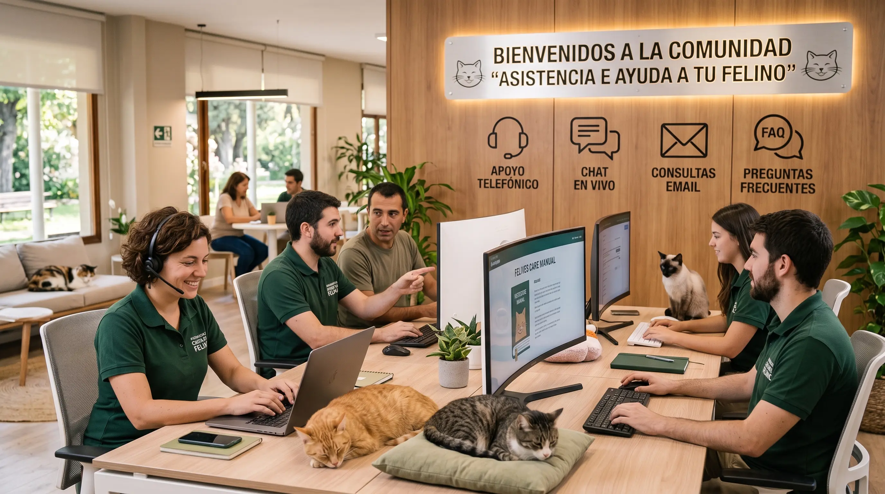

De Lunes a Viernes
Nuestro horario de atención ordinario comprende de 09:00 a 19:00 horas. No obstante, disponemos de cobertura para la guardia de urgencias y emergencias felinas de manera ininterrumpida (24/7).

Podés visitarnos en nuestras oficinas o escribirnos a través del formulario.

Estamos para responder tus dudas y acompañarte en el cuidado de tu gato.
Atención presencial y consultas generales:
Nuestro horario de atención ordinario comprende de 09:00 a 19:00 horas. No obstante, disponemos de cobertura para la guardia de urgencias y emergencias felinas de manera ininterrumpida (24/7).
El servicio opera bajo un régimen de atención habitual de 10:00 a 14:00 horas.
Cerrado (solo urgencias por guardia).